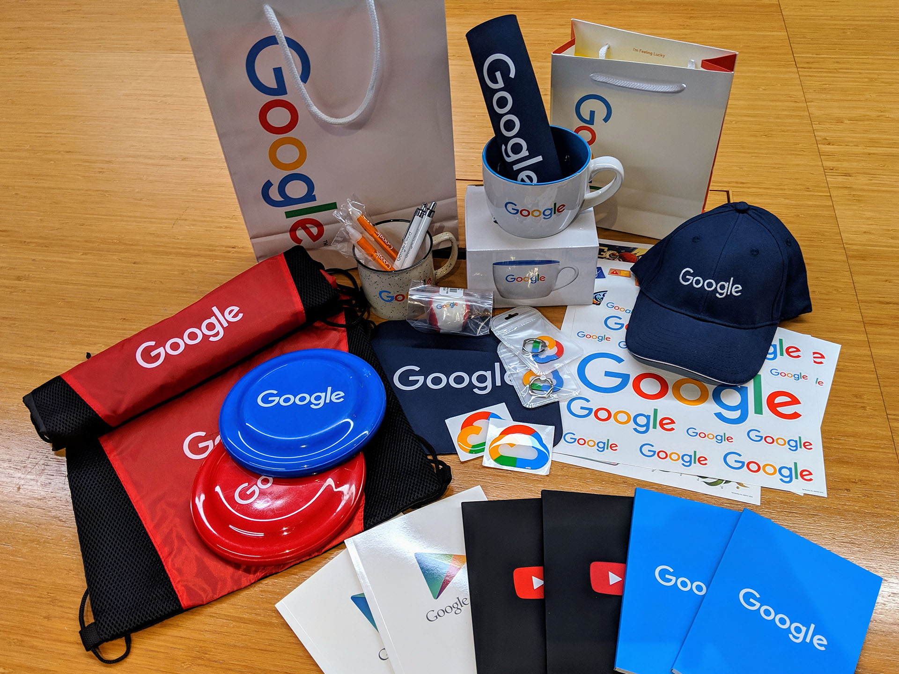
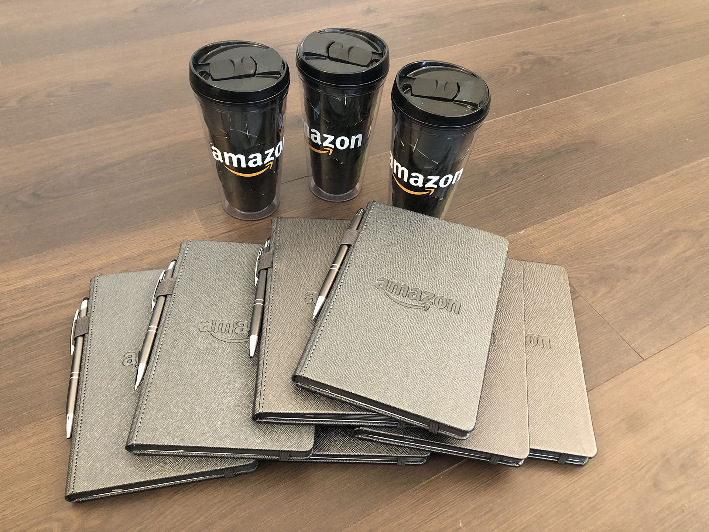

✨ 2019 서강대 패널 토크 ✨
서강대 재학생 여러분 안녕하세요. 😄
학생분들께서 career path 결정 및 development 관련하여 언제나 많은 고민을 하고 있으리라 생각됩니다.
졸업 후 어떤 분야에서 일을 하는지, 혹은 어떻게 준비해야 하는지 등 실질적으로 가지고 계신 궁금증을 조금이라도 해소해 드리고자, 뜻이 맞는 졸업생들이 모여 패널토크를 진행하게 되었습니다.
다양한 분야에서 일하고 있는 졸업생들과 함께 자유로운 Q&A 패널로 행사를 진행할 예정이며, 기회가 된다면 referral 등 실질적으로 졸업생들이 도와줄 수 있는 부분에 대해서도 이야기 나눌 예정입니다.
주요사항 1. 저녁시간에 진행되는 행사인만큼 간단한 다과가 제공될 예정입니다. 원활한 준비를 위하여 미리 참석인원을 파악하고자 하니 아래 양식을 통해 RSVP해주시면 감사하겠습니다.
주요사항 2. 효과적인 Q&A 패널 진행을 위하여, 질문을 미리 수집하고자 합니다.
2-1. 질문은 중복하여 원하시는 만큼 올리실 수 있습니다.
2-2. 다른 학우분들이 올려주시는 질문 중 공감되는 내용이 있다면, 투표를 할 수 있게끔 해놨으니, Clap 기능을 적극적으로 해주시면 감사하겠습니다! 질문들을 취합 및 정리하는데 큰 도움이 됩니다 :)
2-3. 여러 동문들께서 다양한 회사 기념품을 기부해 주셨습니다. 좋은 질문 올려주시는 분들께 나눠드릴 예정이니, 궁금하신 점 많이 올려주시기 바랍니다!


학과 및 학번: 컴퓨터공학과 12학번
현 소속: 카카오 메시징 서버 개발자
기타 주요 이력: KAIST MSc (Mobile Systems)
학과 및 학번: 컴퓨터공학과 12학번
현 소속: 삼성전자 DS부문 인사팀
기타 주요 이력:
서강대학교 응원단 TRIPATHY 3기,
서강대학교 제 43대 총학생회 ABLE 집행부장,
신영증권 시스템개발 하기인턴,
삼성전자 S직군 입사 후 G직군으로 직군변경
학과 및 학번: 컴퓨터공학과 00학번 (경영학 복수전공, 2008년 졸업)
현소속: YouTube 파트너 테크놀러지 매니저
기타 주요 이력: CSPCLAB, 경영전략동아리 WAVB 창립 멤버, LINE 소셜 백엔드 아키텍트, 네이버 생산성 혁신랩, 시장분석실, 차세대 플랫폼 개발팀
학과 및 학번: Art&Technology 13학번 (경영학 복수전공, 2018년도 졸업)
현소속: 롯데 e커머스 UX기획
기타 주요 이력: 삼성전자 VIP센터 인턴, ETRI UI/UX 디자인 학생연구원 참여 경험
학과 및 학번: 컴퓨터공학과 02학번
현 소속: Anaflash Data Scientist
기타 주요 이력: Georgia Tech PhD (Robotics)
학과 및 학번: 컴퓨터공학과 06학번
현 소속: Presto Labs Software Engineer, Co-founder
기타 주요 이력: 2010 ACM-ICPC World Finalist, 서강 ACM-ICPC 학회 활동, 서강 프로그래밍 대회 주최
학과 및 학번: 컴퓨터공학과 02학번 (전자공학 복수전공)
현 소속: Google 본사 Senior Software Engineer
기타 주요 이력: 서강 ACM-ICPC 학회 창립멤버, 제 1회 서강 프로그래밍 대회 주최, 구글 채용 위원회
학과 및 학번: 컴퓨터공학과 12학번
현 소속: Naver 클로바 음성인식 Software Engineer
기타 주요 이력: 이공계 성적우수 국가장학생, 삼성전자 CE/IM 삼성리서치 합격, 미국 실리콘밸리 하계 인턴, 한국정보올림피아드 서울시 고등부 동상
학과 및 학번: 컴퓨터공학과 07학번
현 소속: 스타트링크 대표, 백준 온라인 저지 9년 운영중
기타 주요 이력: 2010 ACM-ICPC World Finalist
2009-10 구글 소프트웨어 엔지니어링 인턴